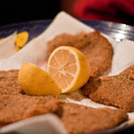

Home
Milanesa

Description
An argentine meal. A loaf of, commonly beef, meat breaded.
Ingredients
- Meat loafs
- Eggs
- Garlic
- Oregano
- Parsley
- Salt
- Breadcrumbs
Steps
Break two eggs and put them on a bowl.
Chop a garlic clove.
Add salt, oregano, parsley and the chopped garlic glove onto the bowl.
Mix the ingredients.
One by one, add the meat loafs onto the mix. Make sure they get well covered.
Bread the meat
On a tray, pour a little bit of oil.
Display the breaded meat on the tray and put it in the oven.
Wait until the lower part of the milanesa gets a golden-like color, then flip them and wait again for the same result.
Enjoy your meal!